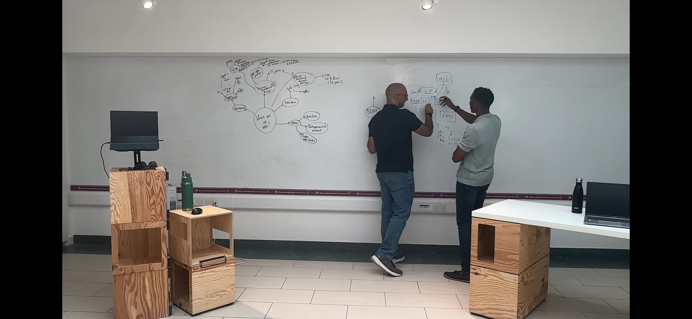

A feature for The Leader and the Team
TeamStrong.
For the leader who needs the team to think with them, not just receive what’s already been thought.
01 · The Problem
The team is full of good people. That’s not the problem.
The problem is that good people working hard isn’t the same as a team thinking together.
You can feel it in the meetings that go nowhere, the strategy sessions that produce slides but not decisions, the way the team waits for you to make the move that you wish they would make themselves.
They’re not failing. But they’re also not thinking with you. They’re thinking around you.
That’s the gap TeamStrong is built around.

02 · The Work
TeamStrong runs over twelve weeks in two phases.
Phase 1 (Weeks 1–4): Individual CliftonStrengths assessments and one-to-one coaching with each team member. Culminates in an Experience Day at The O2: morning workshop, lunch at TOCA Social, afternoon at Activate at The O2. The team thinks together for the first time.
Phase 2 (Weeks 5–12): Bi-weekly group coaching sessions. Four sessions total. The team works on the actual strategic and operational questions in front of them, with the thinking infrastructure now built into how they engage.
The structure is the structure. The work inside it is yours.
03 · The Lenses
Three frames the work moves through.
The team altitude
Teams aren’t just individuals plus interaction. They have their own thinking patterns. The work isn’t only on each person; it’s on the way the team thinks together.
The CliftonStrengths lens
Each team member gets a profile. The team learns to read each other’s profiles. The vocabulary of strengths becomes the shared operating language.
The FITT16 lens
A 16-archetype model built from CliftonStrengths Full 34. For TeamStrong, it shows how each archetype contributes to the team’s collective drive, and where the gaps are.
04 · One Thing Worth Knowing
The team doesn’t think with the leader by default. It has to be designed to.
A team that thinks with the leader is a team that takes ownership, sees the architecture, anticipates the move. That’s not personality. That’s design.
05 · The Invitation
TeamStrong runs over twelve weeks. The fastest way to know whether it fits the team is to start with the leader.
An hour at the board, on the situation you’re trying to move through. From there we both know whether the team version makes sense.
Book a Leader SessionWondering what this looks like when the relationship deepens? Read about going further